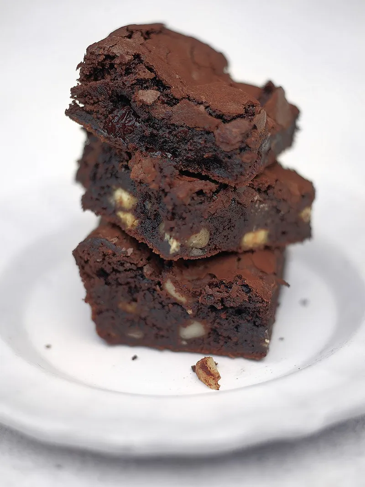

Bloomin' Brilliant Brownies

Description
This is a great little recipe for easy, fail-safe, gloriously gooey chocolate brownies
Ingredients
- 200 g quality dark chocolate (70%)
- 250 g unsalted butter
- 75 g dried sour cherries , optional
- 50 g chopped nuts , optional
- 80 g quality cocoa powder
- 65 g plain flour
- 1 teaspoon baking powder
- 360 g caster sugar
- 4 large free-range eggs
Steps
- Preheat the oven to 180°C/350°F/gas 4. Line a 24cm square baking tin with greaseproof paper.
- Snap the chocolate into a large bowl, add the butter and place over a pan of simmering water, until melted, stirring regularly. Stir through the cherries and nuts (if using).
- Sift the cocoa powder and flour into a separate bowl, add the baking powder and sugar, then mix together.
- Add the dry ingredients to the chocolate, cherry and nut mixture and stir together well. Beat the eggs, then mix in until you have a silky consistency.
- Pour the brownie mix into the baking tin, and place in the oven for around 25 minutes. You don’t want to overcook them so, unlike cakes, you don’t want a skewer to come out clean – the brownies should be slightly springy on the outside but
still gooey in the middle.
- Allow to cool in the tray, then carefully transfer to a large chopping board and cut into chunky squares. Delicious served with a dollop of crème fraîche or yoghurt mixed with some orange zest.